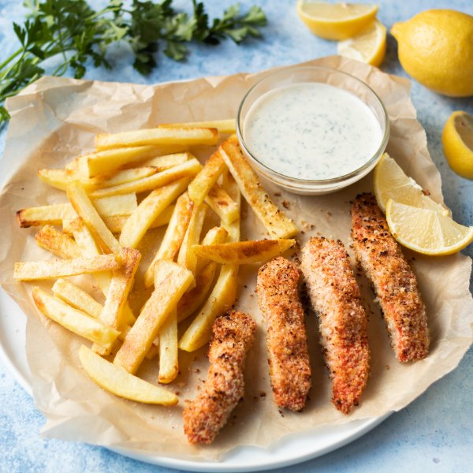

Salmon Fish Fingers with Oven-Baked Fries & Zesty Yogurt Sauce

Total Time
35 min
Nutrition (per serving)
664.7 kcalCalories
48 gProtein
58.7 gCarbs
26 gFat
Full nutrition table
| Calories | 664.7 kcal |
| Total fat | 26 g |
| Saturated fat | 4.5 g |
| Trans fat | 0 g |
| Cholesterol | 78.1 mg |
| Sodium | 349.3 mg |
| Carbohydrates | 58.7 g |
| Fiber | 7 g |
| Sugars | 6 g |
| Protein | 48 g |
| Potassium | 1760.6 mg |
| Calcium | 185.4 mg |
| Iron | 4.2 mg |
| Vitamin A | 275.8 IU |
| Vitamin C | 40.5 mg |
| Vitamin D | 614.1 IU |
Cookware
Ingredients
- ½ small bunchItalian (flat-leaf) parsley
- 2lemons
- ½ cupplain Greek yogurt
- 1 ½ lbsalmon fillet
- 4 mediumyellow potatoes
- black pepper
- Dijon mustard
- extra virgin olive oil
- panko bread crumbs
- salt
Steps
- Preheat oven to 450°F and position racks in the upper and lower thirds of the oven.
- Wash, peel, and slice potatoes into ¼-inch thick strips. Place in a medium bowl and add oil and salt; toss to coat.4 medium yellow potatoes
2 tbsp extra virgin olive oil
1 tsp salt - Spread potatoes out in a single layer on a baking sheet and place in the lower third of the oven (it doesn't have to be fully heated). Tossing once halfway through, roast until golden brown, 15-20 minutes. Reserve bowl for next step.
- Wash, dry, and zest lemons into the reserved bowl.2 lemons
- Add bread crumbs, oil, salt, and pepper to the bowl with the lemon zest; stir to combine.2 cup panko bread crumbs
2 tbsp extra virgin olive oil
1 tsp salt
½ tsp black pepper - If using salmon with skin, place the fillet, skin-side down, on a cutting board. Holding the tail end firmly, use a knife to cut between the flesh and skin; continue to cut through the length of the fillet (take care not to cut through the skin); discard the skin. If you don’t have a tail end, start at one corner of the fillet and work your way in until the knife is between the skin and flesh.1 ½ lb salmon fillet
- Slice the crosswise into 1-inch wide fingers.
- Line a baking sheet pan with aluminum foil.
- Roll the salmon in the bread crumb mixture, pressing to adhere; place on the prepared baking sheet.
- Place salmon in the upper third of the oven and bake until golden, crispy, and cooked through, 6-8 minutes. Watch carefully because the bread crumbs can burn quickly.
- Meanwhile, juice half of the lemons into a small bowl. Cut the remaining lemon into wedges.
- Wash and dry parsley. Shave leaves off the stems; discard the stems and mince the leaves. Add to the bowl with the lemon juice.½ small bunch Italian (flat-leaf) parsley
- Add yogurt, Dijon, salt, and pepper to the bowl; stir to combine the yogurt sauce.½ cup plain Greek yogurt
2 tsp Dijon mustard
½ tsp salt
¼ tsp black pepper - Divide salmon and fries between plates; serve with lemon wedges and yogurt sauce on the side. Enjoy!